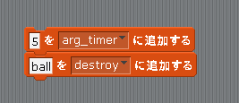

Scratch is developed by the Lifelong Kindergarten Group at the MIT Media Lab. See http://scratch.mit.edu
自動で消す
今のままでは Ball は一回表示するとずっと画面に出たままになりますので、ある程度時間が経過したら自動でインスタンスを削除(つまり画面から消去)するようにしてみます。
Unity で実際にインスタンスを削除するためには Destroy メソッドを使いますが、
今回の scratch2unity で Ball のインスタンスを削除するためには図1の様なスクリプトを書きます。
最初の行は Ball を何時刻後に削除させるかを指定するパラメータで、実際の Unity での単位は「秒」になります。ただし scratch2unity の仕様では「秒」単位では無いので適宜調節して下さい。
最後の行でパラメーターに「ball」を指定して Ball を削除しています。
図1: Ball のインスタンスを削除するスクリプト

例えばこのスクリプトを Ball の Start イベントの中に書くと 5 時刻後に Ball が自動的に消えます。